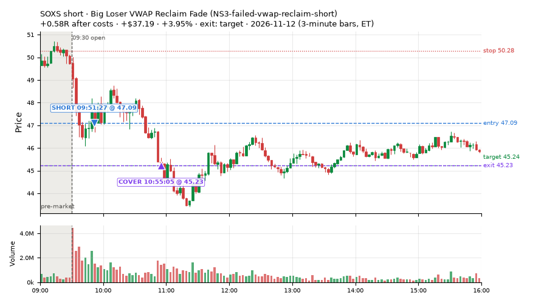
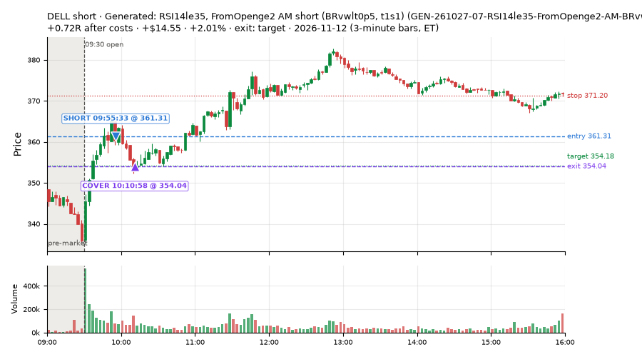
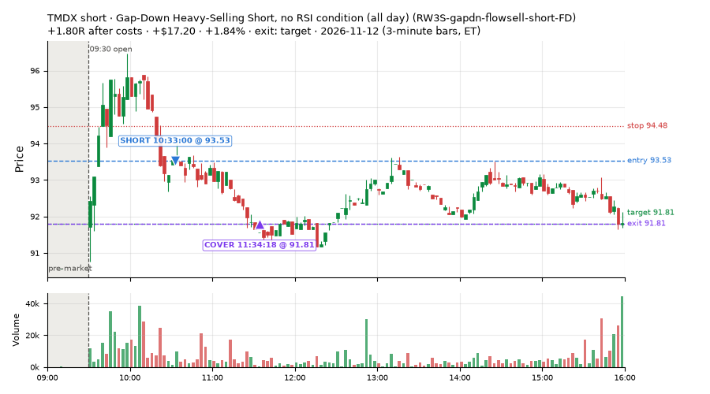
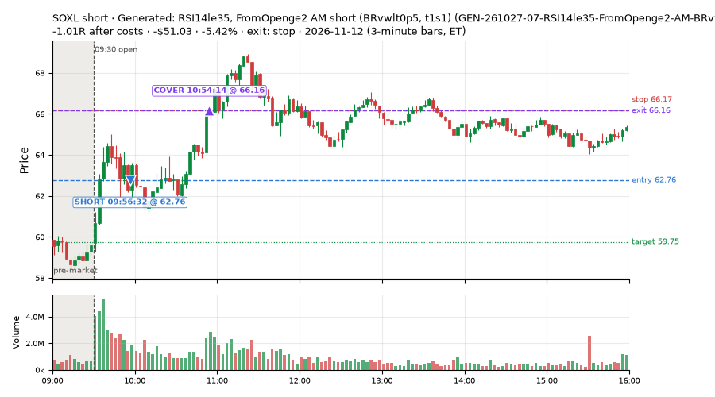
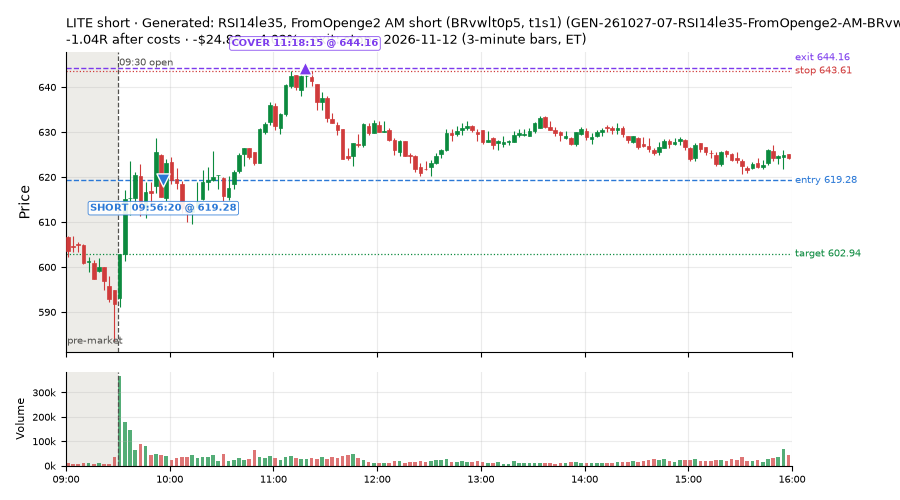
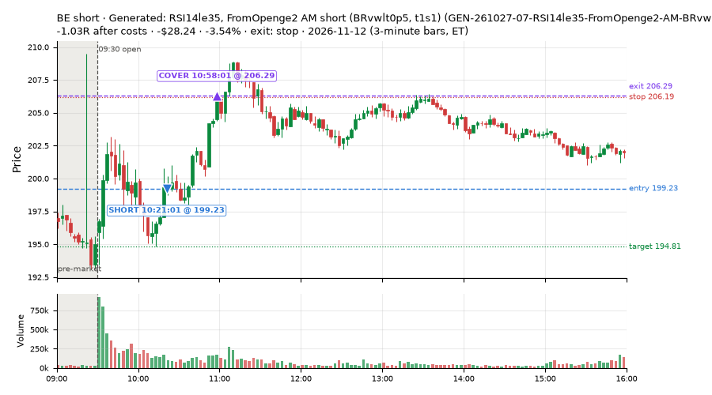
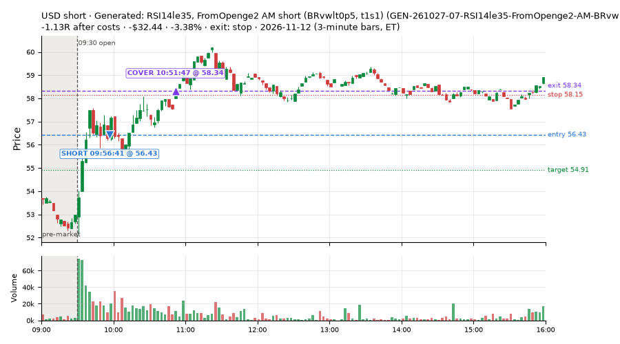
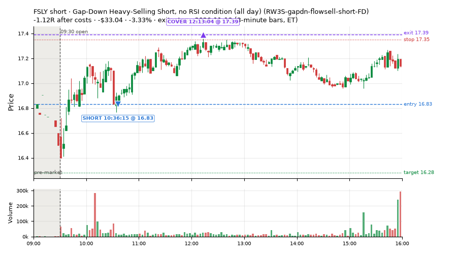

75 trades · win rate 44% · P/L $-485.54
PROBATION: no live setup has passed both locked test periods. 10 owner-directed setups added 2026-10-08 (MarcoFlow top 5 + 5 new), untested live. RW6G1 (RW6 + VWAP band guard) added 2026-10-09, probation.

| Symbol | Setup | Side | In | Out | Entry | Exit | Exit reason | % gained | P/L |
|---|---|---|---|---|---|---|---|---|---|
| SOXS | Big Loser VWAP Reclaim Fade (NS3-failed-vwap-reclaim-short) | short | 09:51 | 10:55 | 47.09 | 45.23 | target | +3.95% | $37.19 |
| DELL | Generated: RSI14le35, FromOpenge2 AM short (BRvwlt0p5, t1s1) (GEN-261027-07-RSI14le35-FromOpenge2-AM-BRvwlt0p5-t1s1-short) | short | 09:55 | 10:10 | 361.31 | 354.04 | target | +2.01% | $14.55 |
| TMDX | Gap-Down Heavy-Selling Short, no RSI condition (all day) (RW3S-gapdn-flowsell-short-FD) | short | 10:33 | 11:34 | 93.53 | 91.81 | target | +1.84% | $17.20 |
| Symbol | Setup | Side | In | Out | Entry | Exit | Exit reason | % lost | P/L |
|---|---|---|---|---|---|---|---|---|---|
| SOXL | GEN-261027-07-RSI14le35-FromOpenge2-AM-BRvwlt0p5-t1s1-short | short | 09:56 | 10:54 | 62.76 | 66.16 | stop | -5.42% | $-51.03 |
| LITE | GEN-261027-07-RSI14le35-FromOpenge2-AM-BRvwlt0p5-t1s1-short | short | 09:56 | 11:18 | 619.28 | 644.16 | stop | -4.02% | $-24.88 |
| BE | GEN-261027-07-RSI14le35-FromOpenge2-AM-BRvwlt0p5-t1s1-short | short | 10:21 | 10:58 | 199.23 | 206.29 | stop | -3.54% | $-28.24 |
| USD | GEN-261027-07-RSI14le35-FromOpenge2-AM-BRvwlt0p5-t1s1-short | short | 09:56 | 10:51 | 56.43 | 58.34 | stop | -3.38% | $-32.44 |
| FSLY | RW3S-gapdn-flowsell-short-FD | short | 10:36 | 12:13 | 16.83 | 17.39 | stop | -3.33% | $-33.04 |








Signal to fill: median 2s, 90th percentile 4s (75 trades). Bars close each minute; the order follows the bar close.
Best excursion (MFE): median 0.49R; worst (MAE) median 0.99R. 24% of trades never got +0.25R in our favour; 0 reached +1R and still closed at or below 0.
| Symbol | Setup | Best R | Worst R | Closed R |
|---|---|---|---|---|
| GPN | RW3S-gapdn-flowsell-short-FD | +0.89 | -1.13 | -1.08 |
| SNDK | GEN-261027-07-RSI14le35-FromOpenge2-AM-BRvwlt0p5-t1s1-short | +0.73 | -1.02 | -1.03 |
| TSM | GEN-261027-07-RSI14le35-FromOpenge2-AM-BRvwlt0p5-t1s1-short | +0.67 | -1.09 | -1.08 |
| SWKS | NS1-rsidip-rsi5pop-long-FD | +0.51 | -1.12 | -1.22 |
| UBER | RW3S-gapdn-flowsell-short-FD | +0.62 | -1.01 | -1.07 |
| Entry time | Trades | Win | Avg R | P/L |
|---|---|---|---|---|
| 09:50-10:30 | 38 | 18% | -0.70 | $-521.47 |
| 10:30-11:30 | 15 | 80% | +0.34 | $28.46 |
| 11:30-13:00 | 8 | 62% | +0.05 | $-6.83 |
| 13:00-14:00 | 5 | 80% | +0.04 | $6.66 |
| 14:00-16:00 | 9 | 56% | +0.03 | $7.64 |
| Setup | Trades | Win | Avg R after costs | Adj R (net of SPY) | Avg R ex-market (all sessions) | P/L |
|---|---|---|---|---|---|---|
| Generated: RSI14le35, FromOpenge2 AM short (BRvwlt0p5, t1s1) (GEN-261027-07-RSI14le35-FromOpenge2-AM-BRvwlt0p5-t1s1-short) | 25.0 | 4% | -0.96 | -0.81 | -0.50 (beta -1.34, n 25) | $-513.26 |
| NS1-rsidip-rsi5pop-long-FD | 4.0 | 0% | -0.80 | -0.61 | – | $-37.83 |
| Big Loser VWAP Reclaim Fade (NS3-failed-vwap-reclaim-short) owner-directed; holdouts once: Sep-Oct +0.119R n65, Apr-Jun -0.136R n524 | 2.0 | 100% | +0.71 | +0.77 | – | $54.76 |
| Gap-Down Heavy-Selling Short, no RSI condition (all day) (RW3S-gapdn-flowsell-short-FD) | 42.0 | 67% | +0.09 | -0.06 | +0.01 (beta -0.98, n 42) | $-15.30 |
| Big Gainer Fade with VWAP Band Guard (RW6G1-ns2-up3-vwap2sd-short) owner-directed; two-year history +0.26R n424 t2.39 (required 4.76), positive up and down sessions; locked block not scored | 2.0 | 100% | +0.81 | +0.64 | – | $26.09 |
Market direction (SPY, beta 1) accounted for $-57.17 of today's $-485.54; the rest ($-428.37) came from the setups themselves. Avg R net of SPY: -0.30 (incl. a hedge leg's cost; report only).
10 setups live today. Today: 187 signals, 75 taken, 0 lost because another setup held the symbol (0%). Since 2026-11-12 (1 sessions): 187 signals, 75 taken, 0 lost to other setups (0%). Peak open positions today 42 of 200 slots. Earnings blackout removed 576 symbols before scanning.
Simulated playing time (not live): 112 what-if trades of signals not taken, avg -0.26R, 38% winners; of them 0 lost to another setup.
| Prio | Setup | Today sig / taken | Sessions | Signals / taken / trades | Taken/day | Expected/day | Lost to other setups | Lost to (setup n) | Top skip reasons | SIMULATED: not-taken n / avg R / win | Verdict |
|---|---|---|---|---|---|---|---|---|---|---|---|
| 1 | Backside Lower-High Short (big runner) CWT04-backside-lh-a25-short | 0 / 0 | 1 | 0 / 0 / 0 | 0.00 | – | 0 | – | – | 0 / – | quiet - wait no signals in 1 session(s); too early to tell |
| 2 | Index Dip Bounce 5 3x S&P IDX5-spy050-0945-3x-trail | 0 / 0 | 1 | 0 / 0 / 0 | 0.00 | – | 0 | – | – | 0 / – | quiet - wait no signals in 1 session(s); too early to tell |
| 3 | * SPY Dip of 0.30%, Breadth Turn (SPXL, trailing) (near-miss) LD8-spy-dip030-breadthturn-spxl-holdtr-long | 0 / 0 | 1 | 0 / 0 / 0 | 0.00 | – | 0 | – | – | 0 / – | quiet - wait no signals in 1 session(s); too early to tell |
| 4 | Prior-Day Low Sweep Reversal to VWAP LIQ-pdl-sweep-open15-vwap-long | 0 / 0 | 1 | 0 / 0 / 0 | 0.00 | – | 0 | – | – | 0 / – | quiet - wait no signals in 1 session(s); too early to tell |
| 5 | Big Gainer Fade with VWAP Band Guard RW6G1-ns2-up3-vwap2sd-short | 3 / 2 | 1 | 3 / 2 / 2 | 2.00 | 0.40 | 0 | – | spread / quote / size 1 | 1 / +1.73R / 100% | slow 10.0 entries/week; ~6 weeks to 60 trades |
| 6 | Generated: MACDhge0p12, Ret15mATRlem0p069 LATE long (BRvwgt0p5, t05s1) GEN-261027-01-MACDhge0p12-Ret15mATRlem0p069-LATE-BRvwgt0p5-t05s1-long | 0 / 0 | 1 | 0 / 0 / 0 | 0.00 | – | 0 | – | – | 0 / – | quiet - wait no signals in 1 session(s); too early to tell |
| 7 | Generated: RSI14le35, FromOpenge2 AM short (BRvwlt0p5, t1s1) GEN-261027-07-RSI14le35-FromOpenge2-AM-BRvwlt0p5-t1s1-short | 83 / 25 | 1 | 83 / 25 / 25 | 25.00 | – | 0 | – | not shortable / shorts off 35, spread / quote / size 17, other 6 | 58 / -0.66R / 17% | ok 125.0 entries/week |
| 8 | Gap-Down Heavy-Selling Short, no RSI condition (all day) RW3S-gapdn-flowsell-short-FD | 91 / 42 | 1 | 91 / 42 / 42 | 42.00 | – | 0 | – | spread / quote / size 31, other 12, not shortable / shorts off 6 | 49 / +0.09R / 55% | ok 210.0 entries/week |
| 9 | Big Loser VWAP Reclaim Fade NS3-failed-vwap-reclaim-short | 5 / 2 | 1 | 5 / 2 / 2 | 2.00 | 3.03 | 0 | – | not shortable / shorts off 2, spread / quote / size 1 | 3 / +0.85R / 100% | slow 10.0 entries/week; ~6 weeks to 60 trades |
| 10 | NS1-rsidip-rsi5pop-long-FD NS1-rsidip-rsi5pop-long-FD | 5 / 4 | 1 | 5 / 4 / 4 | 4.00 | 5.39 | 0 | – | spread / quote / size 1 | 1 / +0.47R / 100% | ok 20.0 entries/week |
Every trade is attached as a CSV you can open and edit in Excel or Google Sheets. Live page: https://misiti15.github.io/MCF/live/